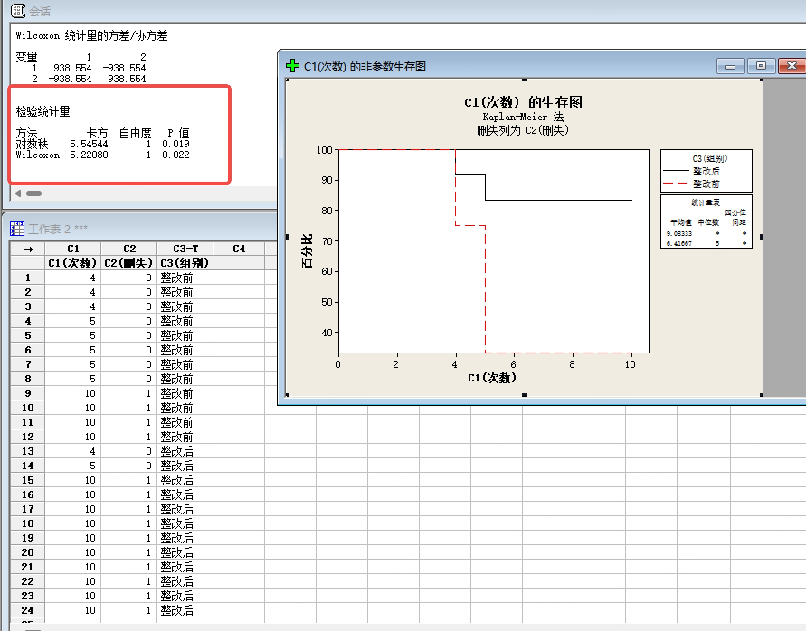
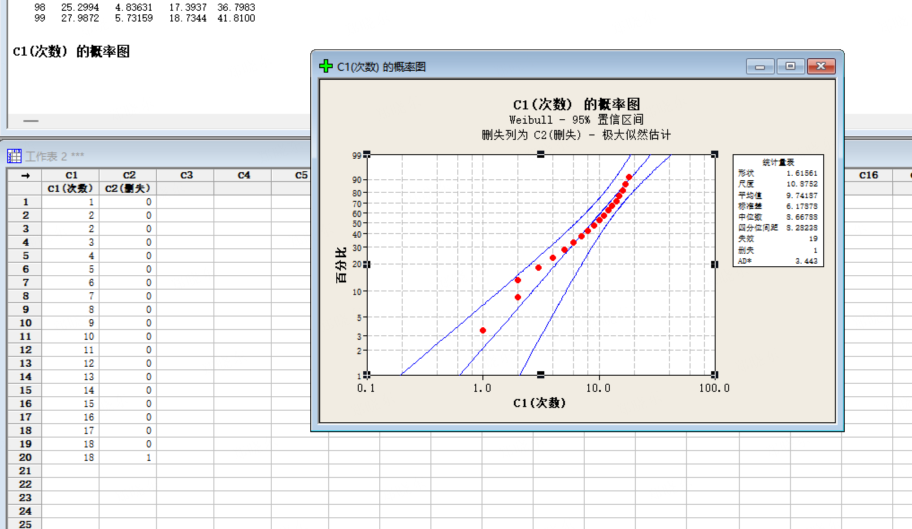

💡 今日知识点:Log-Rank 检验
Log-Rank 检验用于比较两条生存曲线是否有显著差异。
⚠️ 核心判断
p < 0.05 → 有差异 → 整改有效
p ≥ 0.05 → 数据不足以证明有差异
📊 输出两个检验 p 值
1 对数排秩(Log-Rank):对整体差异敏感,可靠性场景优先看这个
2 Wilcoxon:对早期差异更敏感
📝 判断规则
• 两个都 < 0.05 → 结论一致,用 Log-Rank
• 不一致 → 看差异发生在哪个阶段
• p < 0.05 则"整改有统计显著效果,可以放行"
📊 数据表（复制到 Minitab C1/C2/C3 列）
| 样品编号 | C1 失效次数 | C2 删失标记 | C3 组别 |
|---|
| 1 | 4 | 0 | 整改前 |
| 2 | 4 | 0 | 整改前 |
| 3 | 4 | 0 | 整改前 |
| 4 | 5 | 0 | 整改前 |
| 5 | 5 | 0 | 整改前 |
| 6 | 5 | 0 | 整改前 |
| 7 | 5 | 0 | 整改前 |
| 8 | 5 | 0 | 整改前 |
| 9 | 10 | 1 | 整改前 |
| 10 | 10 | 1 | 整改前 |
| 11 | 10 | 1 | 整改前 |
| 12 | 10 | 1 | 整改前 |
| 13 | 8 | 0 | 整改后 |
| 14 | 9 | 0 | 整改后 |
| 15 | 10 | 1 | 整改后 |
| 16 | 10 | 1 | 整改后 |
| 17 | 10 | 1 | 整改后 |
| 18 | 10 | 1 | 整改后 |
| 19 | 10 | 1 | 整改后 |
| 20 | 10 | 1 | 整改后 |
| 21 | 10 | 1 | 整改后 |
| 22 | 10 | 1 | 整改后 |
| 23 | 10 | 1 | 整改后 |
| 24 | 10 | 1 | 整改后 |
说明：0 = 失效，1 = 删失/全过；整改前 12 台（8 失效 + 4 删失），整改后 12 台（2 失效 + 10 删失）
📋 Minitab 操作路径
1. 将上方 24 台数据复制到 C1 / C2 / C3
2. 菜单：统计 → 可靠性/生存 → 非参数分布分析(右删失)
3. 时间列=C1，删失列=C2，删失值=1，按变量(B)=C3
4. 结果(R)选项选"对数排秩和 Wilcoxon 统计量"
5. 确定 → 输出窗口会同时显示两个检验的 p 值
📱 传音场景示例
模拟数据:整改前 30 台(18 台失效),整改后 30 台(5 台失效,25 台全过)
Log-Rank 检验输出 p=0.003 < 0.05 → 整改前后有显著差异 → 整改有效,可放行量产

图：Kaplan-Meier 分析结果（Log-Rank p=0.019 < 0.05，整改有效）

图：Weibull 概率图输出示例（含形状参数 β、尺度参数 η、AD 统计量）
⚠️ 注意事项 / 避坑指南
• Log-Rank 和 Wilcoxon 不一致时，不要随便选一个 → 看差异主要发生在早期还是后期
• 差异主要发生在早期 → 参考 Wilcoxon（对早期差异更敏感）
• 差异主要发生在整体 → 参考 Log-Rank（对整体差异更敏感）
• p 值刚好在 0.05 附近（如 0.048 或 0.052）→ 不要死板判断，结合曲线和工程意义
• 样本量太小时 Log-Rank 检验力不足 → 可能 p≥0.05 但实际有差异
📝 样本量要求
• 每组建议至少 15~20 台（含删失）
• 传音内部建议：整改前后各 30 台
• 样本太少 → 检验力不足 → 即使有真实差异也可能 p≥0.05
📄 报告写法
“整改前后各测 30 台，Kaplan-Meier 分析：Log-Rank p=0.003，整改有统计显著改善，可放行量产。”
如果 p≥0.05：
“整改前后各测 30 台，Kaplan-Meier 分析：Log-Rank p=0.21，数据不足以证明整改有显著改善，建议增加样本量或继续优化。”
🗣️ 人话版总结：
Log-Rank 检验就是“两条 KM 曲线的差异是不是真的”的裁判。
p<0.05 = “差异是真的，不是运气” → 整改有效；
p≥0.05 = “差异可能是运气造成的” → 不能下结论。